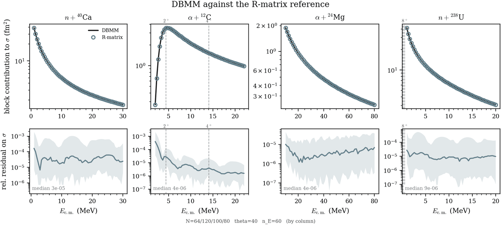
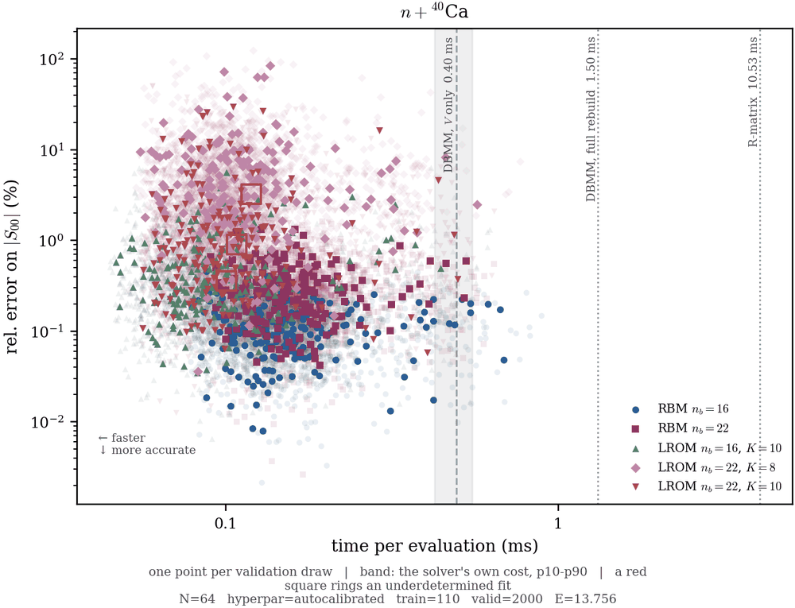

Computational emulation of nuclear dynamics
M1 research internship · IJCLab, Orsay · June–July 2026 · supervised by Chloé Hebborn and Patrick McGlynn
The problem
Predictions of scattering observables for nuclei far from stability rest on the optical potential, an effective interaction that stands in for every reaction channel not treated explicitly. Its parameters are calibrated near stability and used far from it, so a prediction has to carry a quantified uncertainty. Bayesian calibration needs between ten thousand and a million solves of a coupled-channel scattering problem: too many for the solver alone. The internship attacks that cost by emulation.
What was built
- A high-fidelity multichannel solver based on the Direct Boundary Matching Method (DBMM), single- and coupled-channel, with distinct thresholds, closed channels and complex potentials, validated against an independent calculable R-matrix code.
- Two emulators on top of it: a reduced basis method (RBM), already benchmarked in the literature, and a learning reduced-order model (LROM), whose coupled-channel version is new here.
- Both exploit the same affine split of the problem, M(E, θ) = K(E) + V(θ), so the parameter-dependent part is cheap to rebuild.

What it shows
Four benchmark systems (n+40Ca, α+12C, α+24Mg, n+238U), up to eight coupled channels and ten free parameters:
- both emulators reproduce the solver below the adopted tolerance, εpost = 5×10−3, at the median over the parameter box, on all four systems;
- both are faster than the solver exploiting the same affine split, by a factor that grows with the size of the system;
- the LROM is the cheaper of the two on all four, its gain over that baseline 1.3 to 1.9 times larger; which is more accurate depends on the system and on the quantity scored.

Scope: every statement holds over the report's parameter boxes, on one Jπ block, and against this solver rather than against experiment. For a campaign limited by the number of forward evaluations, the report recommends the LROM.